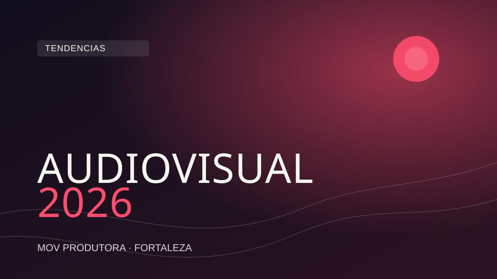

O mercado audiovisual corporativo está em transformação acelerada. O que funcionava em 2022 já não é suficiente em 2026 — e as empresas que entendem isso primeiro levam uma vantagem competitiva significativa. Para quem está em Fortaleza e no Ceará, onde o mercado criativo cresce a passos largos, esse conhecimento é ainda mais estratégico.
Neste artigo, mapeamos as cinco principais tendências que estão moldando o audiovisual corporativo em 2026, com reflexões práticas sobre como cada uma delas pode impactar a comunicação da sua empresa.
A inteligência artificial deixou de ser uma curiosidade tecnológica para se tornar uma ferramenta de produção real e acessível. Em 2026, as produtoras que integram IA ao seu fluxo de trabalho entregam mais rápido, com mais consistência e com maior capacidade de iteração criativa.
Na pré-produção, ferramentas de IA já auxiliam na geração de roteiros, storyboards e moodboards. Um diretor criativo pode usar IA para esboçar cenários visuais, testar paletas de cores e até simular movimentos de câmera antes de montar qualquer equipamento. Isso reduz o tempo de aprovação com o cliente e garante que a equipe chegue ao set com clareza máxima sobre o que precisa ser capturado.
Na pós-produção, a IA é ainda mais transformadora. Ferramentas de edição assistida identificam os melhores takes automaticamente, sincronizam áudio e vídeo com precisão cirúrgica e geram versões de corte inicial em fração do tempo que levaria um editor humano. A colorização assistida por IA analisa a identidade visual da marca e aplica LUTs personalizados com consistência perfeita entre takes.
Para empresas em Fortaleza, isso significa que é possível hoje ter produções com acabamento de altíssimo nível sem os prazos longos que seriam necessários há alguns anos. A IA não substitui o olhar humano — ela amplifica a capacidade criativa da equipe e libera tempo para o que realmente importa: a narrativa e a emoção.
Um ponto importante: IA é ferramenta, não atalho. Produtoras que usam IA sem curadoria humana entregam conteúdo genérico, sem personalidade. As melhores produções de 2026 são aquelas que usam IA com inteligência criativa — onde a tecnologia serve à visão, e não o contrário.
Existe uma reação clara do público ao conteúdo corporativo excessivamente polido e artificial. O consumidor de 2026 é sofisticado o suficiente para reconhecer quando está assistindo a algo fabricado — e essa percepção quebra a confiança em vez de construí-la.
A resposta criativa a esse fenômeno é a estética documental: vídeos que parecem reais porque são reais. Câmera na mão, iluminação natural, entrevistas sem teleprompter, bastidores autênticos, erros que ficam no corte final porque humanizam. Essa linguagem, que antes era associada a produções independentes e jornalismo, invadiu o audiovisual corporativo com força total.
Não confunda estética documental com produção de baixa qualidade. O paradoxo é justamente esse: fazer algo parecer natural e espontâneo requer tanta — ou mais — habilidade técnica do que uma produção convencional. A iluminação precisa ser invisível. O áudio precisa ser perfeito. O diretor precisa criar condições para que a autenticidade apareça.
Para empresas em Fortaleza, a estética documental é especialmente relevante porque o Nordeste tem uma riqueza de histórias, texturas e rostos que funcionam perfeitamente nessa linguagem. Uma empresa que mostra sua equipe real, seus processos reais e seus clientes reais constrói um diferencial que nenhum concorrente pode copiar — porque é genuíno.
Em 2026, mais de 70% do consumo de vídeo acontece em dispositivos móveis, e a tela do smartphone é vertical. Instagram Reels, YouTube Shorts, TikTok — todos esses formatos verticais não são tendências passageiras. São o ambiente nativo onde a maioria do seu público vive.
Para o audiovisual corporativo, isso representa uma mudança fundamental na forma de planejar e filmar. Não se trata simplesmente de recortar um vídeo horizontal para encaixar numa tela vertical — isso é a abordagem errada. O conteúdo nativo vertical é planejado para vertical desde o início: enquadramento, composição, ritmo de edição, texto na tela, tudo pensado para quem está segurando o celular.
Empresas que entendem isso produzem dois tipos de vídeo de forma integrada: o horizontal institucional (para site, apresentações, TV corporativa, YouTube principal) e o vertical nativo (para redes sociais e distribuição mobile). As melhores produções de 2026 capturam material suficiente para alimentar ambos os formatos a partir de uma única filmagem.
Para negócios em Fortaleza que dependem de alcance local — restaurantes, clínicas, escritórios, construtoras, escolas — os vídeos verticais para Instagram Reels são hoje a forma mais eficiente de aparecer organicamente para um público geograficamente relevante. Um Reel bem feito, com conteúdo genuíno, alcança mais pessoas em Fortaleza do que qualquer outro formato de distribuição orgânica.
A era do vídeo único para todos os públicos está chegando ao fim. Em 2026, as empresas mais sofisticadas produzem vídeos personalizados para segmentos específicos de audiência — diferentes versões de um mesmo conteúdo adaptadas para diferentes personas, estágios do funil ou canais de distribuição.
Isso é possível graças a duas forças simultâneas: o barateamento da produção de vídeo (que permite produzir mais variações com o mesmo orçamento) e a sofisticação das plataformas de distribuição (que permitem segmentar com precisão cirúrgica quem vê cada versão).
Na prática, uma empresa pode hoje produzir um vídeo institucional base e a partir dele criar: uma versão curta de 30 segundos para anúncios no Instagram, uma versão com foco em depoimentos para o LinkedIn, uma versão técnica detalhada para o site, e uma versão emocional para feiras e eventos. O investimento em produção é único; o alcance e a relevância são multiplicados.
Para PMEs em Fortaleza, a estratégia de micro-segmentação começa com algo simples: entender quem são os dois ou três perfis de cliente mais importantes para o negócio e produzir conteúdo que fala diretamente com cada um. Uma clínica odontológica que cria um vídeo diferente para pacientes que buscam estética e para pacientes que buscam tratamento de urgência converte muito mais do que uma clínica com um único vídeo genérico para todos.
Talvez a tendência mais duradoura e relevante de todas: o storytelling corporativo que coloca pessoas no centro. Não o produto. Não a empresa. As pessoas — colaboradores, clientes, comunidade.
Em 2026, os vídeos corporativos mais impactantes são aqueles que contam histórias humanas. A história do funcionário que passou por uma transformação profissional dentro da empresa. A história do cliente que resolveu um problema real com um serviço específico. A história da comunidade impactada por uma iniciativa corporativa. Essas histórias criam conexão emocional que dados e argumentos racionais nunca conseguem criar.
O storytelling bem executado exige planejamento, pesquisa e uma direção sensível. Não é sobre fabricar uma narrativa bonita — é sobre encontrar histórias reais que já existem dentro da empresa e trazê-las à superfície de forma que ressoe com o público certo.
Para empresas em Fortaleza e no Ceará, existe uma riqueza narrativa particular: a garra do empreendedorismo nordestino, a cultura regional que permeia as relações de trabalho, a história de negócios que cresceram a partir de muito esforço e identidade local. Empresas que abraçam essa narrativa autêntica criam um ativo de comunicação que é genuinamente único — impossível de ser replicado por uma multinacional ou por um concorrente de outra região.
Diante dessas tendências, qual é o passo prático para uma empresa em Fortaleza que quer estar posicionada corretamente em 2026? A resposta está em um plano audiovisual que contemple as cinco dimensões acima de forma integrada e progressiva.
Comece por entender quem é seu público e onde ele consome conteúdo. Se seus clientes estão no Instagram, priorize Reels verticais com estética documental. Se estão no LinkedIn, invista em storytelling mais reflexivo e produções com mais profundidade. Se a decisão de compra é influenciada por uma visita ao site, um vídeo institucional bem produzido é o seu maior ativo.
Em seguida, pense em recorrência. Uma produção anual de alto impacto é importante, mas o conteúdo constante — produzido com qualidade, mesmo que mais simples — é o que constrói audiência e autoridade ao longo do tempo. O algoritmo premia quem aparece com regularidade; o público confia em quem está presente.
Por fim, escolha bem com quem você vai produzir. As tendências de 2026 exigem uma produtora que seja ao mesmo tempo tecnicamente competente e criativamente sensível — que use as ferramentas certas sem perder o olhar humano que transforma uma gravação em uma história.
Quer produzir conteúdo audiovisual alinhado com as tendências de 2026? A MOV Produtora está em Fortaleza e ajuda empresas de todo o Ceará a se comunicar com mais impacto.
Solicitar orçamento pelo WhatsApp